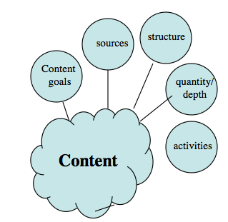

6.4 Gerenciamento de conteúdo



6.4.1 A importância do conteúdo
Para a maioria dos professores e instrutores, o conteúdo é frequentemente o foco principal no planejamento de disciplinas. O conteúdo inclui fatos, ideias, princípios, evidências e descrições de processos ou procedimentos. Dedica-se muito tempo a debater que conteúdo deve ser incluído no currículo, o que precisa ser abordado em um curso ou programa, a que fontes de conteúdo (como livros didáticos) os estudantes devem ter acesso, e assim por diante. Os professores e instrutores sentem-se frequentemente pressionados a cobrir todo o currículo no tempo disponível. Em particular, as aulas expositivas presenciais continuam a ser o meio principal para organizar e transmitir o conteúdo.
A defesa do equilíbrio entre o conteúdo e o desenvolvimento de competências é feita várias vezes ao longo deste livro, mas as questões em torno do conteúdo continuam a ser criticamente importantes no ensino. Em particular, os professores precisam fazer a si próprios estas duas perguntas:
- “Que conteúdo específico agregará valor aos objetivos globais desta disciplina ou programa?”
- “Que conteúdo é essencial para atingir os resultados de aprendizagem desta disciplina, e qual é desejável, mas não necessariamente obrigatório?”
6.4.2 Objetivos para o conteúdo
Especialmente no ensino superior, os professores tendem a considerar o conteúdo como algo dado — é o que ensinamos. No entanto, é importante, ao planejar o ensino para a era digital, ter clareza sobre os nossos objetivos ao ensinar conteúdos. Por que exigimos que os estudantes conheçam fatos, ideias, princípios, evidências e descrições de processos ou procedimentos? A aprendizagem de um conteúdo específico é um objetivo em si ou é um meio para atingir um fim? Por exemplo, existe um valor intrínseco em conhecer a tabela periódica ou as datas de batalhas históricas, ou são meios para atingir um fim, como projetar experimentos ou compreender por que razão o francês é uma língua oficial no Canadá?
A questão é importante porque, na era digital, alguns argumentam que a aprendizagem ou a memorização de conteúdos se torna menos importante ou mesmo irrelevante, quando é fácil consultar fatos, definições ou equações. Os cognitivistas argumentam que o conteúdo necessita de ser enquadrado ou contextualizado para ter significado. Uma vez que o conteúdo é hoje tão fácil de acessar, necessitamos apenas de recorrer a ele quando necessário, como para resolver problemas ou tomar decisões? Em muitos casos, naturalmente, as competências dependem essencialmente de conhecimentos prévios, pelo que não se trata de uma questão de exclusão mútua.
Provavelmente, mais importante do que o próprio professor ter clareza sobre a razão pela qual o conteúdo é ensinado, é os estudantes compreenderem isso. Uma forma de colocar esta questão é perguntar: que valor é agregado aos objetivos gerais desta disciplina ou programa pelo ensino deste conteúdo específico? Os estudantes precisam memorizar este conteúdo ou saber onde o encontrar e quando é importante utilizá-lo? Isto depende, naturalmente, de se definirem objetivos muito claros para a disciplina ou programa como um todo.
6.4.3 Quantidade e profundidade


Em muitos contextos, os professores têm pouca escolha quanto ao conteúdo. Organismos externos, tais como agências de acreditação, governos estaduais ou provinciais, ou conselhos de licenciamento profissional, podem ditar o conteúdo que uma determinada disciplina ou programa deve cobrir. No entanto, o rápido crescimento do conhecimento científico e tecnológico desafia cada vez mais a ideia de um corpo fixo de conteúdos que os estudantes devem aprender. Os programas de engenharia e medicina lutam para cobrir, mesmo em seis ou oito anos de educação formal, todo o conhecimento de que os profissionais necessitam para exercer a profissão de forma eficaz. Os profissionais precisarão continuar aprendendo muito além da graduação se quiserem acompanhar os novos desenvolvimentos na sua área.
Em particular, cobrir o conteúdo rapidamente ou sobrecarregar os estudantes com matérias não constitui uma estratégia de ensino eficaz, porque mesmo trabalhando mais horas por dia não permitirá aos estudantes destas áreas dominar toda a informação de que necessitam na sua profissão. A especialização tem sido a forma tradicional de lidar com o crescimento do conhecimento, mas isso não ajuda a lidar com problemas ou questões complexas no mundo real, que exigem frequentemente abordagens interdisciplinares e de base mais ampla. Assim, os professores precisam desenvolver estratégias que permitam aos estudantes lidar com a quantidade massiva e crescente de conhecimentos na sua área.
Uma forma de lidar com o problema da explosão do conhecimento consiste em focar no desenvolvimento de competências, tais como a gestão do conhecimento, a resolução de problemas e a tomada de decisões. No entanto, estas competências não são isentas de conteúdo. Para resolver problemas ou tomar decisões, necessita-se de acesso a fatos, princípios, ideias, conceitos e dados. Para gerir o conhecimento, necessita-se de saber que conteúdo é importante e por quê, onde o encontrar e como o avaliar. Em particular, pode haver conhecimentos ou conteúdos fundamentais ou básicos que precisam ser dominados para a maior parte das suas atividades profissionais. Uma competência docente será, portanto, a capacidade de diferenciar entre as áreas de conteúdo essenciais e as desejáveis, e de garantir que, independentemente do que for feito para desenvolver competências, o conteúdo fundamental seja abordado no processo.
6.4.4 Fontes
Outra decisão crítica para os professores na era digital refere-se a onde os estudantes devem buscar ou encontrar o conteúdo. Na Idade Média, os livros eram escassos e a biblioteca era uma fonte essencial de conteúdos não apenas para os estudantes, mas também para os professores. Os professores tinham de selecionar, mediar e filtrar os conteúdos porque as fontes de informação eram extremamente escassas. Hoje não nos encontramos nessa situação. O conteúdo está, literalmente, em todo o lado: na internet, nas mídias sociais, nas mídias de massa, em bibliotecas e livros, bem como nas salas de aula.
Muitas vezes, dedica-se muito tempo nas reuniões de departamento ou de coordenação de curso a debater quais livros didáticos ou artigos os estudantes devem ser obrigados a ler. Parte da razão para selecionar ou limitar o conteúdo prende-se com a necessidade de limitar o custo para os estudantes, bem como com a necessidade de focar em uma gama limitada de materiais em uma disciplina ou programa. Mas hoje em dia, o conteúdo é cada vez mais aberto, gratuito e disponível sob demanda na internet. A maioria dos estudantes precisará continuar aprendendo após a graduação. Eles recorrerão cada vez mais às mídias digitais para obter as suas fontes de conhecimento. Por conseguinte, ao decidir sobre o conteúdo, devemos considerar:
(a) até que ponto o professor necessita de escolher o conteúdo para um programa (além de um conjunto amplo de tópicos curriculares) e até que ponto os estudantes devem ser livres de escolher o conteúdo e a fonte desse conteúdo?
(b) até que ponto o professor necessita de transmitir ele próprio o conteúdo, como através de uma aula expositiva ou de slides de PowerPoint, quando o conteúdo está disponível de forma tão livre noutros locais? Qual é o valor agregado que fornece ao apresentar o conteúdo você mesmo? Poderia o seu tempo ser mais bem aproveitado de outras formas?
(c) até que ponto necessitamos de fornecer critérios ou diretrizes aos estudantes para escolherem e utilizarem conteúdos de acesso aberto, e qual é a melhor forma de o fazer?
Ao responder a estas questões, deveríamos também nos perguntar se as nossas decisões ajudarão os estudantes a gerirem melhor o conteúdo por si próprios após a formatura.
6.4.5 Estrutura
Um dos apoios mais críticos que os professores oferecem consiste em estruturar a sequência e a inter-relação dos diferentes elementos de conteúdo. Incluo na estrutura:
- a seleção e o sequenciamento do conteúdo,
- o desenvolvimento de um foco ou abordagem específica para áreas de conteúdo específicas,
- o auxílio aos estudantes na análise, interpretação ou aplicação do conteúdo,
- a integração e articulação de diferentes áreas de conteúdo.
Tradicionalmente, o conteúdo tem sido estruturado dividindo uma disciplina em um conjunto de aulas temáticas ministradas em uma sequência específica e, no âmbito das aulas, pelos professores "enquadrando" e interpretando o conteúdo. (Pode-se observar como isto espelha um processo de fabricação industrial). No entanto, as novas tecnologias oferecem formas alternativas de estruturar o conteúdo. Os sistemas de gestão de aprendizagem, como o Blackboard ou o Moodle, continuam a permitir que os professores selecionem e sequenciem o material didático, mas os estudantes podem acessar a este — e a outros — conteúdos em qualquer lugar, a qualquer hora e em qualquer ordem. A disponibilidade de uma vasta gama de conteúdos na internet e a capacidade de recolher e ordenar conteúdos através de blogs, wikis e e-portfólios permitem aos estudantes estruturar, eles próprios, as matérias de forma crescente.
Os estudantes necessitam de algum tipo de estrutura nas áreas de conteúdo, em parte porque algumas coisas precisam ser aprendidas "na ordem correta", em parte porque sem estrutura o conteúdo se torna um amontoado de tópicos não relacionados e em parte porque os estudantes não conseguem saber ou deduzir o que é importante e o que não é em um domínio de conteúdo global, pelo menos até começarem a estudá-lo. Os estudantes iniciantes, em particular, precisam saber o que devem estudar a cada semana. Existe um volume significativo de pesquisas que sugere que os estudantes iniciantes beneficiam amplamente de abordagens sequenciais e rigidamente estruturadas do conteúdo, mas, à medida que se tornam mais informados ou experientes na área, procuram desenvolver as suas próprias abordagens para a seleção, ordenação e interpretação do conteúdo.
Por conseguinte, ao decidir sobre a estrutura do conteúdo em um curso ou programa, os professores precisam perguntar:
(a) quanta estrutura devo fornecer na gestão do conteúdo e quanto devo deixar para os estudantes?
(b) de que forma as novas tecnologias afetam a maneira como devo estruturar o conteúdo? Permitirão fornecer estruturas mais flexíveis que se adaptem a uma gama diversificada de necessidades dos estudantes?
Do mesmo modo, ao responder a estas questões, deveríamos perguntar quão importante é para os próprios estudantes serem capazes de estruturar o conteúdo, e se as nossas respostas às duas perguntas acima os ajudarão a fazê-lo.
6.4.6 Atividades dos aprendizes
Por fim, que atividades devemos solicitar aos estudantes que realizem para os ajudar a aprender o conteúdo? Para responder a esta questão, será necessário regressar aos objetivos de aprendizagem do conteúdo e aos objetivos globais da disciplina:
- se a memorização for importante, podem ser utilizados testes automatizados, tais como tarefas corrigidas por computador com fornecimento das respostas corretas;
- se o objetivo for permitir aos estudantes recorrerem a conteúdos como fatos, princípios, dados ou evidências para construir um argumento, resolver equações ou projetar um experimento, serão necessárias oportunidades para praticar tais competências;
- se o objetivo for ajudar os estudantes a gerirem o conhecimento, poderemos ter de definir tarefas que exijam que estes selecionem, avaliem, analisem e apliquem o conteúdo.
Veremos que a tecnologia nos permite alargar consideravelmente a gama de atividades que os estudantes podem utilizar para dominar o conteúdo, mas estas precisam estar relacionadas com os objetivos de aprendizagem definidos para o curso ou programa. Sem um conjunto planejado de atividades, contudo, o conteúdo pode simplesmente entrar no cérebro em um dia e sair no seguinte.
6.4.7 Conclusão
Mesmo ou especialmente na era digital, o conteúdo, em termos de coisas a saber, continua a ser criticamente importante, mas na era digital o papel do conteúdo está mudando sutilmente, tornando-se, de certa forma, um meio para atingir outros fins, tais como o desenvolvimento de competências, e não um fim em si mesmo. Devido ao rápido crescimento do conhecimento em quase todas as áreas temáticas, ter clareza sobre o papel e o objetivo do conteúdo em uma disciplina, e comunicar isso de forma eficaz aos estudantes, torna-se particularmente importante.
Atividade 6.4 Gerenciamento de conteúdo
- Observe o conteúdo global em um dos cursos ou turmas que está ensinando.
- Quanta escolha você tem sobre o conteúdo deste curso? (Em pelo menos dois aspectos: a escolha dos tópicos e a forma como o conteúdo é abordado. Por exemplo, frequentemente nas escolas secundárias de muitos países economicamente avançados, o currículo é decidido a nível estadual ou provincial, mas, dentro disso, os professores dispõem de uma grande liberdade sobre a forma de ensinar esse currículo).
- Que objetivo serve este conteúdo? Tem valor por si só ou está presente para servir outros fins (tais como o desenvolvimento de competências)?
- Qual seria a melhor fonte deste conteúdo para os estudantes: livro didático, aula expositiva, pesquisa on-line, outros, todos estes? Por quê?
- Que atividades são disponibilizadas para permitir aos estudantes aprenderem ou aplicarem o conteúdo nesta disciplina? Tendo em conta os objetivos deste curso, as atividades são adequadas?
- De que forma o conteúdo desta disciplina se articula com o conteúdo de disciplinas afins (tanto anteriores como posteriores a esta)? É essencial para o que se segue, duplica o que os estudantes já abordaram noutros locais? Como sabe disso? (por exemplo, existe um processo de desenvolvimento curricular?)
- Tendo em conta os objetivos ou resultados de aprendizagem desta disciplina, que conteúdo poderia ser removido sem comprometer a consecução desses objetivos?
Não há feedback sobre esta atividade.